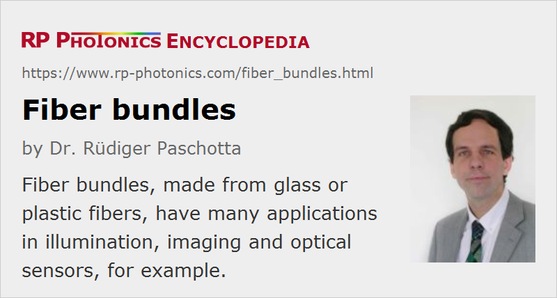

Fiber Bundles
Definition: bundles of optical fibers
Alternative term: fiber-optic bundles
German: optische Faserbündel
Category: fiber optics and waveguides
How to cite the article; suggest additional literature
Author: Dr. Rüdiger Paschotta
For some applications, some number of optical fibers is bundled together, forming a fiber bundle or fiber-optic bundle. In most cases, one uses multimode large-core silica fibers or plastic fibers. Sometimes, only a small number of fibers is joined – for example, seven fibers, where six of them are arranged around one central one –, while in other cases one uses a very large number of fibers.
The fibers are often put together such that they form a hexagonal pattern (see Figure 1). Alternatively, they may be assembled randomly, i.e., with an irregular pattern. The overall shape may be hexagonal, approximately circular or rectangular, but other forms (e.g. rings) are possible as well. One can bundle bare glass or plastic fibers, or sometimes fibers which have some thin polymer coating (e.g. of polyimide), which does not substantially increase the fiber diameter and may serve to reduce mechanical stress.
The volume between the fibers may be filled with some glue, for example, or just remain empty. In some cases, one presses the fibers together while heating them, so that they become soft and get fused together; that is usually done only with the end portions, so that the other parts of the bundle remain flexible. The input coupling losses (see below) can be reduced that way, because dead space is eliminated.
For imaging applications (see below), and sometimes requires bundles consisting of many very small fibers. They are often not made directly by bundling a large number of such fibers. An alternative fabrication method starts with a process similar to the fabrication of a fiber-optic plate, where one bundles fibers, fuses them to obtain another fiber preform, and draws that into a multi-fiber, containing many fiber cores. That process can be repeated to obtain a further increased number of fibers, and one can then assemble many such multi-multi-fibers side by side. It is possible to later on separate all the contained fibers again with an etching process, if the preform contains a suitable type of glass between the fibers which can be etched away. Such bundles are called leached imaging bundles.
Another possibility is to produce wound fiber bundles, which consist of some number of multi-fibers; each of those is drawn from a preform assembled from multiple fibers. In such a wound bundle, the multi-fibers can move against each other, except at the fused ends, but the fibers within each multi-fiber remain fixed to each other.
Flexible Fiber Bundle Cables
One usually applies a polymeric coating and further protection layers around the whole bundle, e.g. a sleeve or flexible tube, often made of stainless steel. If only such an enclosure is used without gluing or fusing the fibers together, a fiber bundle can be highly flexible. It can then be bent and twisted, and it can be used as a flexible light pipe, similar to an electrical cable, even if its thickness is substantial. The thinner the used fibers are, the better can be the flexibility of the bundle.
Fiber Rods
If the whole bundle is fused, one obtains a rigid fiber rod. This can still be somewhat deformed, e.g. bent, twisted or tapered while being heated to a sufficiently high temperature.
Profile Conversion
The shapes of the input and output interface do not necessarily have to be identical. For example, there are fiber bundles where the input fibers are arranged to a circle, while the output fibers form a rectangle, a narrow line or a cross. Such round-to-line profile converters, for example, are used for spectrometers (see below).
Branched Bundles
It is also possible to make fiber bundles which are split (branched) or merged. For example, there are Y bundles with one input and two output bundles. There are also multi-branch fiber bundles with more outputs, e.g. 1-to-7 fan-out bundles containing just seven fibers, or alternatively some larger number of fibers in each output cable.
Branched fiber bundles can be used, for example, as splitters for illuminating multiple spots with a single light source, or as combiners for multiple signals sent to a single instrument.
Ordered and Unordered Bundles
Fiber bundles may be ordered or unordered. In the former case, there is a one-to-one correspondence concerning the arrangement of input and output fibers; this is required for imaging applications, for example. Ordered fiber bundles are also called coherent, although that has nothing to do with the usual meaning of coherence in optics. Unordered (incoherent) bundles are made such that there is a pseudo-random relation between input and output fibers. That can be useful for illumination purposes and for certain sensors, for example.
Connectorization
In some cases, fiber bundles are equipped with fiber connectors (e.g. of FC type) to obtain flexible fiber cables which can easily be connected to instruments. That can usually be done only with a limited number of fibers, for example four or seven.
Customized Solutions
Some suppliers offer fiber bundles which can be customized in many ways, for example concerning the type, number and dimension of fibers, length, shapes and branching.
Although most fiber bundles are made either from silica fibers or plastic fibers, there are custom solutions based on a wide range of specialty fibers, for example mid-infrared fibers. One can also have mixed bundles containing different types of fibers.
Tapered Bundles
It is possible to taper not only single fibers, but also whole fiber bundles which are fused together. See the article on fiber-optic tapers.
Launching Light into Fiber Bundles
Each fiber has a limited numerical aperture according to its refractive index contrast between core and cladding. The resulting limitation of the angular range also applies to input and output of the whole fiber bundle. Quite different values of numerical aperture can occur, mostly between 0.1 and 1.
In most cases, no attempt is made to launch light into specific fibers, or to concentrate it into the fiber cores. Instead, one more or less uniformly illuminates the input face of a fiber bundle, e.g. with a halogen lamp, with light-emitting diodes (LEDs) or a laser. Some of the light hitting the input face will then be lost – in particular, the light which gets into the space between the fibers (where propagation losses are often very high), and also light getting into the fiber claddings, from where light can often get into the lossy space between the fibers. For minimum losses, one uses large-core fibers, where the fiber core has an only slightly smaller diameter than the fiber cladding. The useful (light-guiding) fraction of the input area may then exceed 50%.
Fresnel reflections at the end faces cause losses, which can be reduced with anti-reflection coatings. Note that imaging fiber bundles often have a high-index core glass, where the Fresnel reflections are much stronger than for ordinary fibers. It can then be particularly important to use anti-reflection coatings.
Additional light losses can occur within the fibers; the latter effect, however, is often comparatively weak, since fiber bundles are usually not very long, and the other losses dominate.
When two fiber bundles are connected to each other, there are usually substantial additional light losses because the fiber positions cannot be matched at the interface.
For coupling a high optical power from some kind of lamp (e.g. a halogen lamp) into a fiber bundle, one can use a condenser where the numerical aperture of the bundle is matched and unwanted infrared light is eliminated with a cold mirror, for example (which is particularly important for plastic fibers). One may also use a field lens for achieving uniform illumination.
There are fiber bundles which are specially optimized for transmitting light from high-power lasers, sometimes with the ability to transport several kilowatts of optical power. Some of them are made from copper-coated multimode fibers, where the copper metal layer helps to distribute heat.
Loss of Coherence and Polarization
Generally, both the coherence and the polarization of light are not preserved by a fiber bundle. For example, the relative phase delay for propagation through two different fibers of a bundle is generally random and changes when the bundle is bent, for example. However, fiber bundles are anyway mostly used with incoherent and unpolarized light.
Cross-talk
For some applications, it is important to have a minimum amount of cross-talk between the fibers. That is particularly the case for imaging applications.
When using ordinary step-index multimode fibers with a not too small cladding layer, there should normally be very little cross-talk for light launched into the fiber cores. However, this might change when the fibers are fused together. Also, one might have light propagating between the fibers, if that region is not too lossy, and that light may emerge at quite different locations at the output. Suppression of such light, which could propagate in an uncontrolled manner, one sometimes introduces absorber materials. For more details, see the article on fiber-optic plates.
There are also specialized bundles made from metal-coated fibers, which are made for certain applications in spectroscopy.
Broken Fibers
Particularly after some time of use, a fiber bundle may contain some broken fibers, which exhibit a much reduced light transmission. That can be particularly detrimental for imaging applications, while some moderate additional lights loss may not matter much for an illumination purpose.
The specifications for fiber bundles may include some fraction of allowed broken (dark) fibers, resulting from the fabrication process.
Applications of Fiber Bundles
Illumination
Mostly unordered (“incoherent”) fiber bundles are used for light transport in illumination systems. It is also possible to branch a bundle for distributing light from a single light source to multiple places, for example. Flexible bundles are convenient in some cases, while others are used in fixed configurations. A high numerical aperture can enhance the light transmission, but also leads to a wider angular range at the output.
It can be advantageous to keep a light source away from the illuminated setup, avoiding influences of generated heat, for example. In other cases, the illuminated area contains strong electric fields, explosive substances or other things which should not come close to the light source.
Illumination may not only be done with visible light, but also with ultraviolet light, e.g. for UV curing of adhesives.
Light Collection and Shape Matching
Connectorized fiber bundles can be used for transporting light e.g. to a spectrometer. Compared with a single fiber, one can transport more light. Another interesting aspect is that one may collect light from a circular area while having the light output along a line, which fits well to the input slit of a monochromator. In that way, one can substantially improve the signal strength and the signal-to-noise ratio.
Imaging
Ordered (“coherent”) fiber bundles can be used for imaging applications. For example, they may transmit images in medical endoscopes. While a single fiber could not transmit an image, a large fiber bundle can do that, because there is little coupling between the fibers; each fiber represents one pixel of an image.
There are imaging fiber bundles containing the order of 100,000 fibers of small diameter (possibly <10 μm), resulting in a total diameter of a couple of millimeters. One may produce images with a resolution of 50 lines per millimeter or even more, comparable to that of some image sensors. However, due to the limited number of fibers the resulting image quality is still much lower than that of a modern image sensor, which can have millions of pixels.
Of course, the observed objects need to be imaged to the input of the fiber bundle, using some kind of objective.
In an endoscope, additional fibers can be used for illumination. That can be done with an unordered fiber bundle around the ordered imaging bundle.
In some other cases, one exploits the mechanical flexibility of a fiber bundle for image inversion. For example, there are night vision devices where the image inversion by the objective is compensated with a 180° twisted fiber bundle between the image intensifier and the optical output.
A fiber bundle may also be used to transport light from a phosphor screen of an image intensifier to an image sensor. Compared with a traditional lens-based optical setup, the image quality is far worse, but the coupling efficiency may be higher, unless a lens system with particularly low f-number is used.
Sensors
Various types of optical sensors utilize fiber bundles. For example, one may use a Y bundle for a reflection probe, where one branch provides illumination light and a second branch collects reflected light. Using UV-transmitting fibers, one can for example illuminate a sample with ultraviolet light and collect induced fluorescence light.
Thermal Imaging
Some fiber bundles made from infrared fibers are used for thermal imaging, where the infrared detector is placed in a dewar at a very low temperature, and a fiber bundle is used to transport the infrared radiation to the detector.
Suppliers
The RP Photonics Buyer's Guide contains 27 suppliers for fiber bundles.
Questions and Comments from Users
Here you can submit questions and comments. As far as they get accepted by the author, they will appear above this paragraph together with the author’s answer. The author will decide on acceptance based on certain criteria. Essentially, the issue must be of sufficiently broad interest.
Please do not enter personal data here; we would otherwise delete it soon. (See also our privacy declaration.) If you wish to receive personal feedback or consultancy from the author, please contact him e.g. via e-mail.
By submitting the information, you give your consent to the potential publication of your inputs on our website according to our rules. (If you later retract your consent, we will delete those inputs.) As your inputs are first reviewed by the author, they may be published with some delay.
See also: fibers, multimode fibers, fiber-optic plates, multi-core fibers
and other articles in the category fiber optics and waveguides
|  |
If you like this page, please share the link with your friends and colleagues, e.g. via social media:
These sharing buttons are implemented in a privacy-friendly way!